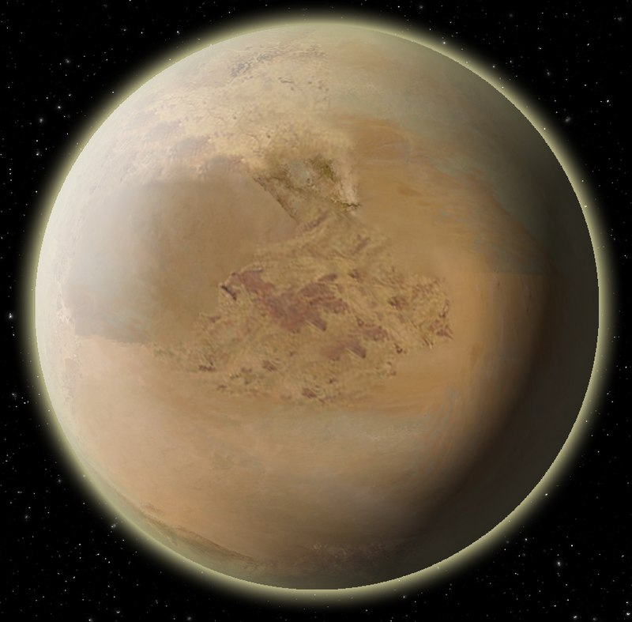
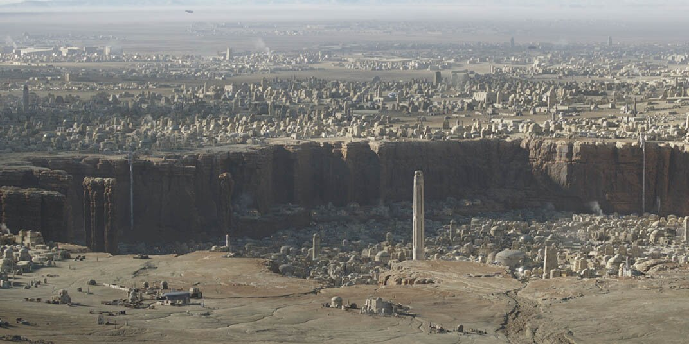
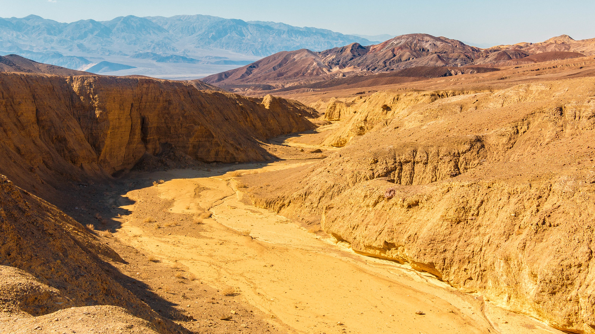

Loin des Mondes du noyau, l'inhospitalière planète des sables Tatooine ne présente que peu d'intérêt pour la vieille République et pour l'Empire qui lui succède. Ironiquement, ce monde poussiéreux est la patrie de deux générations de Skywalker, dont le rôle dans la destruction de ces gouvernements galactiques est prépondérant.
|  | |
 |  |